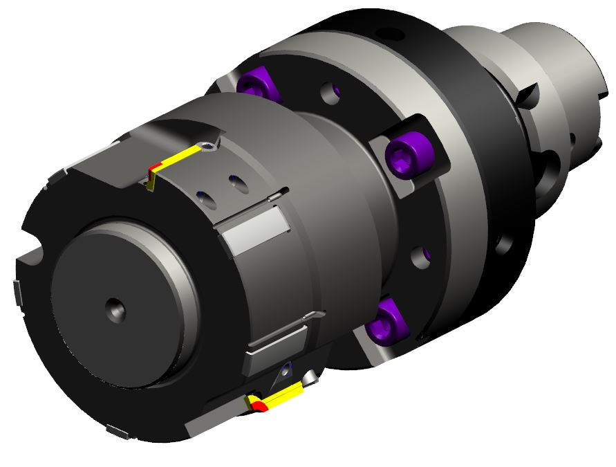
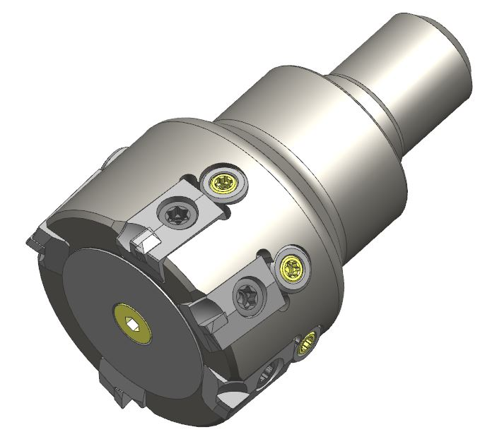
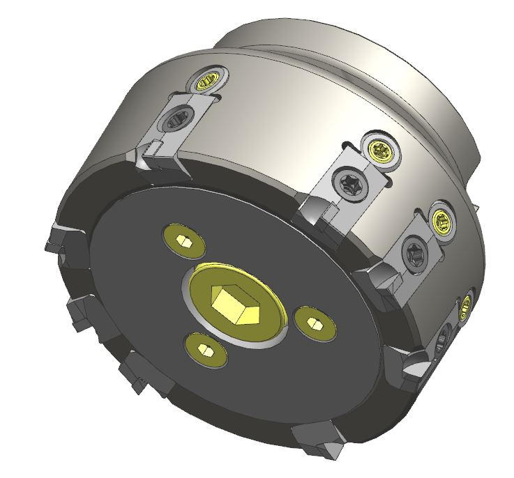
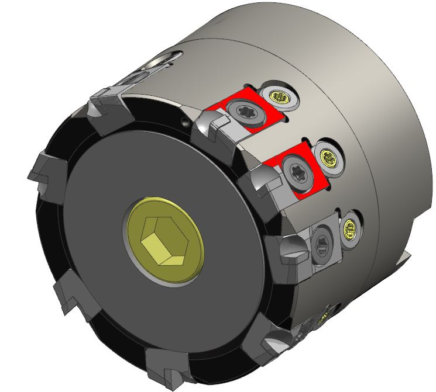

PCD面铣刀结构可以为焊接式或可调刀片式，若要查看焊接式PCD面铣刀请移至" 焊接式刃口刀具"部分。主要用于铝合金表面的粗精加工，或者具有固定纹路的表面。PCD刀片为非标定制刀片，关于PCD刀片产品请移至" 刀片"部分。
|  |
图号: CN-21047 型号: RM-000.69-03121992 刀片: CR-11702/CR-11703 设计者: DX |
|  |
型号: RM-000.69-03121992 刀片: 03124505/03124506 直径40，齿数4+1，网纹刀片理论高出其余刃口0.3mm。 设计者: PZ |
|  |
型号: RM-000.69-03121993 刀片: 03124505/03124506 直径63，齿数6+2，网纹刀片理论高出其余刃口0.3mm。 设计者: PZ |
|  |
图号: 03180366 型号: RM-000.69-63-M27-PCD-W 刀片: 03180367/03180370 直径63，齿数7+1，网纹刀片理论高出其余刃口0.3mm。 设计者: PZ |